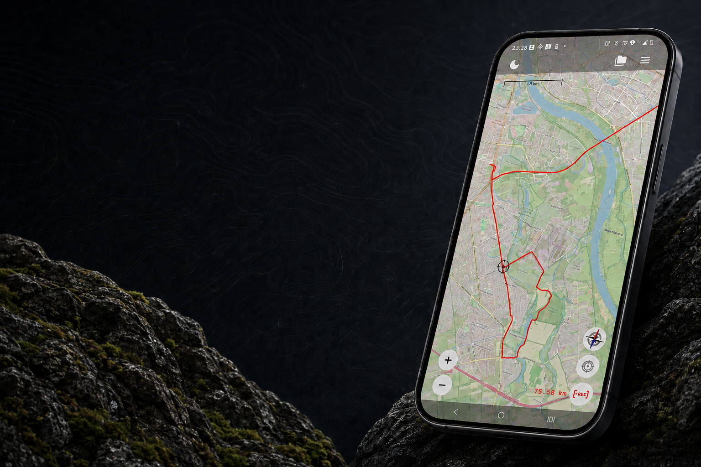

Record a GPS track
Start recording, watch the current distance and finish the track when you reach your destination.
Android app
GPX Tracks helps you record GPS tracks, open and export GPX files, and save waypoints with an icon, title and description.
Get it on Google PlayRead the FAQ
Start recording, watch the current distance and finish the track when you reach your destination.
Long press the map, then add a title, description and icon. A point can be linked to the current recording.
Open files from your phone, import them into your library and export tracks to other apps.
Tracks, points and waypoints are stored locally. No account is required.
Elevation statistics use your device GPS and are calculated locally. Online maps require internet access; offline maps are available only where enabled.
Find answers on the FAQ page. The privacy policy explains location, maps and optional Firebase Analytics.
Contact: trackergpx@gmail.com